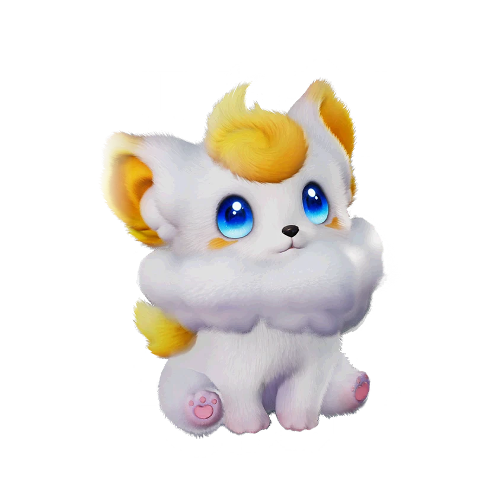

รายชื่อ Aniimo › #059

จิ้งจอกปุกปุย (Fentuft)
#059ธาตุสายฟ้าLuminDPSTier C
พวกมันมักมีรอยยิ้มประจำตัวอยู่เสมอและชวนแอนีโมตัวอื่นมาเล่นด้วยกัน แม้บางครั้งจะก่อเรื่องเพราะความซุกซนและความตะกละ แต่สุดท้ายก็มักได้รับการให้อภัยเสมอ
ดูรายละเอียดเต็ม ร่างพิเศษ และร่างเปล่งประกายค่าสถานะพื้นฐาน
| HP | 85 |
|---|---|
| ATK | 106 |
| P.DEF | 60 |
| M.DEF | 60 |
| REGEN | 77 |
| BREAK | 41 |
สกิล
| โจมตีปกติ | ATK สายฟ้า ใช้พลังสายฟ้าโจมตีเป้าหมายจากระยะไกล |
| สกิล 1 | Thunder Field สายฟ้า สร้างสนามสายฟ้าที่ติดตามเป้าหมาย เมื่อเป้าหมายภายในสนามถูกโจมตีด้วยการโจมตีธาตุสายฟ้าจะถูกโจมตีด้วยสายฟ้าเพิ่มเติมอีกครั้งและติด [ดีบัฟสายฟ้า] การโจมตีธาตุสายฟ้าจะกระตุ้นเอฟเฟกต์นี้ได้ไม่เกินหนึ่งครั้งทุก 0.2 วินาที สนามสายฟ้าจะคงอยู่นาน 8 วินาที |
| สกิล 2 | Lightning Dart สายฟ้า ยิงลูกดอกสายฟ้าใส่เป้าหมาย ทำดาเมจใส่เป้าหมายทั้งหมดที่อยู่ในเส้นทาง พร้อมทั้งดึงดูดเป้าหมายเหล่านั้นเข้าหาต่อเนื่อง |
สายวิวัฒนาการ
- จิ้งจอกปุกปุย → จิ้งจอกแผงคอยาว (แอนีโมเลเวล 42, แลกเปลี่ยนแอนีโมกับเพื่อนหนึ่งครั้ง)
จุดเกิด
- Driftwise Meadow Lv. 50–55
Held Item ที่แนะนำ
- Ferocious Fang แอนีโมที่ติดตั้งจะได้รับพลังโจมตีเพิ่ม 0.7 หน่วยต่อเลเวล
- Fission Needles การโจมตีปกติแต่ละครั้งมีโอกาส 50% ที่จะทำดาเมจสองเท่า
งานใน Homeland
งานธาตุสายฟ้า Lv.1, ขนของ Lv.1